Link para essa app ↓
JCC 2022 - Ecossistema Python

Created by Fernando Marques
O que veremos?
Vamos fazer um vôo sobre várias partes do python
- História
- Características da Linguagem
- Implementações
- Frameworks e Bibliotecas
- Podcasts e Sites
História e Gestão

- A implementação começou em 1989 por Guido Van Rossum na Holanda
- Python 2.0 foi lançado em 2000
- Python 3.0 lançado em 2008 e o suporte ao famoso python 2.7 acabou em 2020.
- O devenvolvimento acontece por meio de PEPs submetidas pela comunidade e Guido tinha poder de veto
- Guido era um Benevolent Dictador for Life mas anunciou sua saída em 2018
- PEP 13 rege a governança do Python
- Atualmente o conselho é composto por cinco pessoas
Python e Monty Python
Quando começou a implementar Python, Guido van Rossum também estava lendo os roteiros publicados de “Monty Python's Flying Circus”, uma série de comédia da BBC dos anos 1970. Van Rossum achou que precisava de um nome que fosse curto, único e um pouco misterioso, então decidiu chamar a linguagem de Python.
Tipagem
- A tipagem é dinâmica, o que isso significa?
- Alocação de memória
a = 10
print(type(a))
a = "10"
print(type(a))
b = "10"
print(hex(id(a),hex(id(b)))) Switch
- Em python é match/case e foi implementado na versão 3.10
- Alocação de memória
var = 10
match var:
case 10:
print("Foi!")
case 42 | "42":
print("Não foi")
case _:
print("Outro") Walrus Operator
- Python 3.8 PEP-572
- Assignment expression operator
- Em Python o operador = não retorna valores
>>> walrus = False
>>> walrus
False
>>> (walrus := True)
True
>>> walrus
TrueDecorators
- Em python funções são objetos de primeira classe e podem ser passados como parâmetro
- Decorators funcionam como wrappers
- A biblioteca functools tem o decorator @cache
def my_decorator(func):
def wrapper():
print("Vou começar a função!")
func()
print("Terminei a função!")
return wrapper
@my_decorator
def f():
print("função")
# ou
f = my_decorator(f)Generators
- Permite criar funções que funcionem como um iterator
- Muito útil para fazer coisas como barra de progressão
- Ou, por exemplo, pegar cada valor de fibonacci sem rodar a função para cada valor
def numeros(n):
for i in range(n):
yield i
print(sum(numeros(15)))
print(max(numeros(15)))
x = numeros(5)
print(next(x))
print(next(x))
Virtual Environments
- venv permite a criação de um ambiente Virtual
- c:\>c:\Python35\python -m venv c:\path\to\myenv
A virtual environment is a Python environment such that the Python interpreter, libraries and scripts installed into it are isolated from those installed in other virtual environments, and (by default) any libraries installed in a “system” Python, i.e., one which is installed as part of your operating system.
Virtual Environments

GIL - Global Interpreter Lock
- Qual problema ele resolve? - Mutex
- Lembram das referencias?
- Quando python foi criado não era comum ter computadores com muitos processadores
- CPU-bound vs I/O-bound
- GIL impacta apenas CPU bound
- “I’d welcome a set of patches into Py3k only if the performance for a single-threaded program (and for a multi-threaded but I/O-bound program) does not decrease” - Guido
- Soluções Multi-processing, IronPython, Jython, PyPy
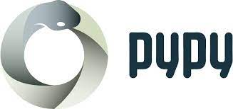

 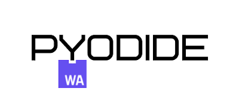
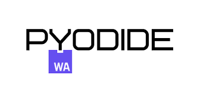
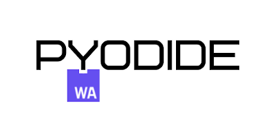
Implementações
- CPython, é a implementação padrão escrita em C convertendo código em bytecode que é interpretado
- Cython, é um superconjunto do Python com sintaxe C
- PyPy, é implementado em Python. Usa JIT e por isso é mais rápido que CPython
- Jython, é implementado em Java e pode rodar na JVM. Permite integração com Java
- IronPython, é implementado em C# e tem integração com .NET e bibliotecas
- PyScript e Pyodide são implementações de Python em WebAssembly
Frameworks e bibliotecas
 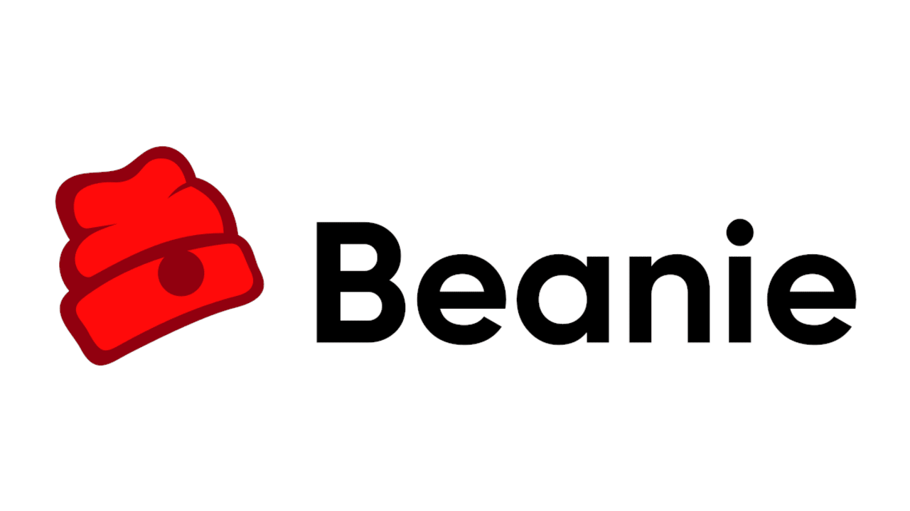
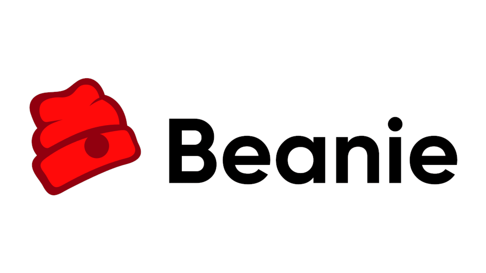
 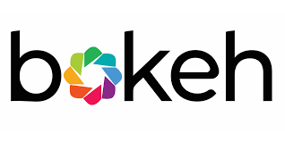
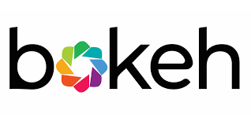


 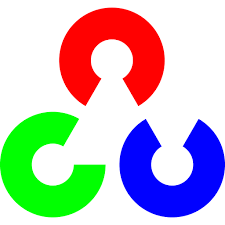
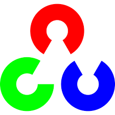
 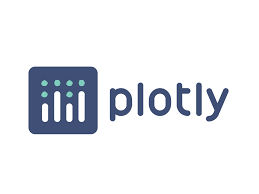
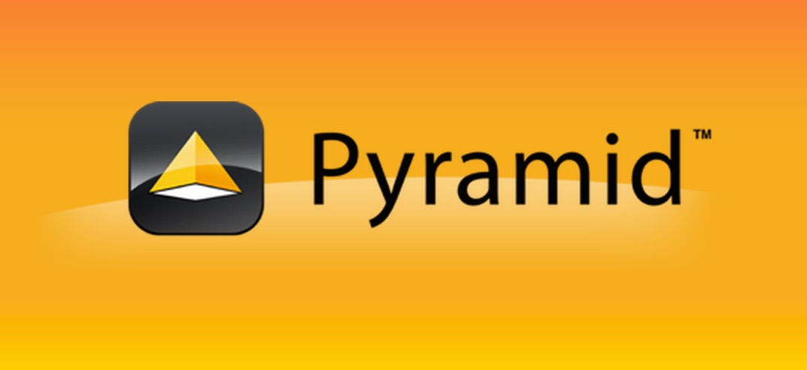
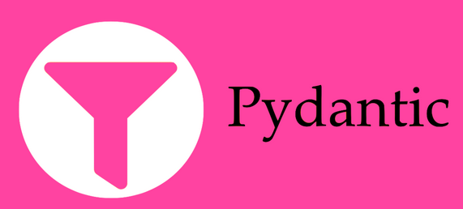
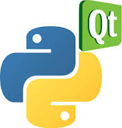
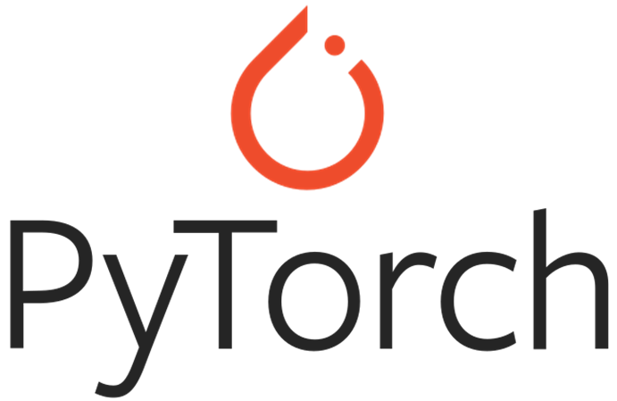
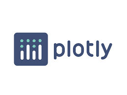
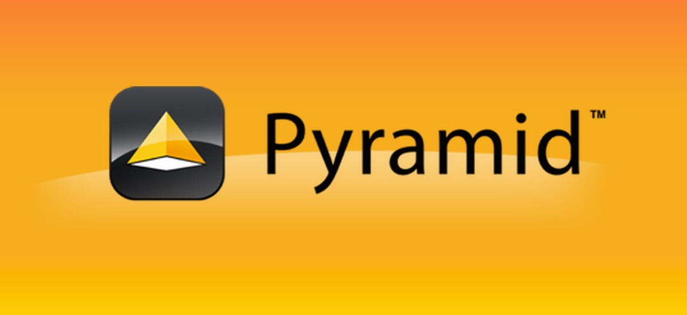
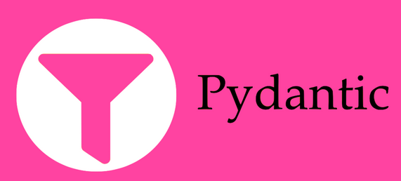
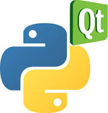
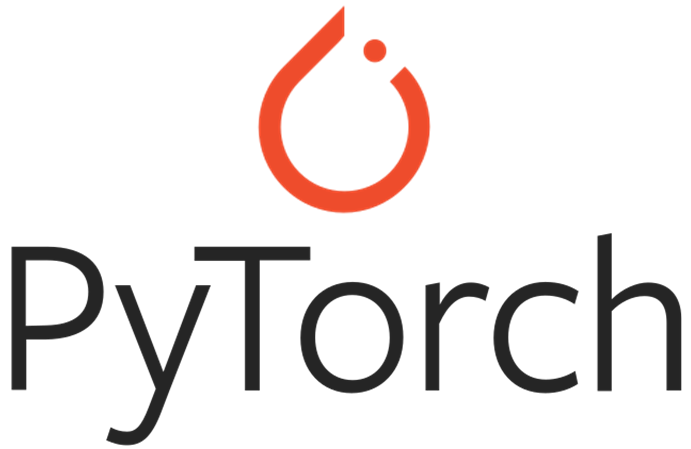

 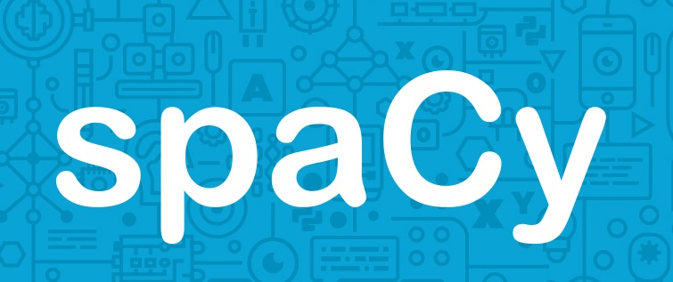
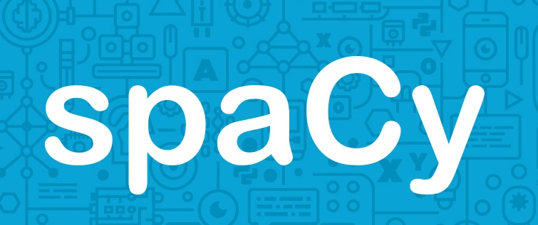
 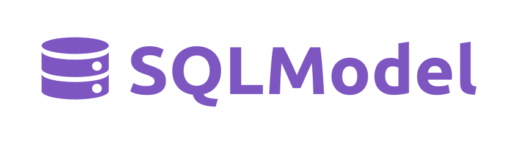
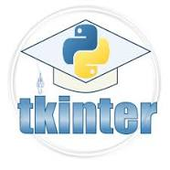
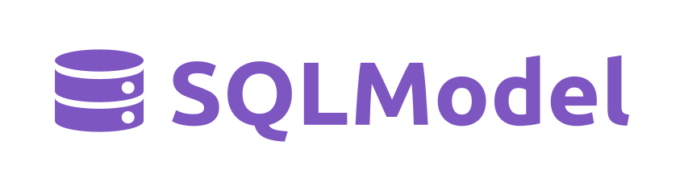
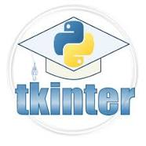
Validação de Dados
Black is the uncompromising Python code formatter. By using it, you agree to cede control over minutiae of hand-formatting. In return, Black gives you speed, determinism, and freedom from pycodestyle nagging about formatting. You will save time and mental energy for more important matters.
pydantic Data validation and settings management using Python type annotations. pydantic enforces type hints at runtime, and provides user friendly errors when data is invalid.
Interface com Usuário
- Kiwi: Linguagem própria para definir as interfaces
- Tkinter: é baseado no Gnome do Linux
- PyQt/PySide: é baseado na biblioteca Qt do KDE. QtDesigner
- dearpygui e pysimplegui
- gooey: Transforma qualquer aplicação CLI em GUI
Web
- Django framework robusto para criação de páginas web. Procurem The Basics of TDD and Django é free! 😎
- Flask é um framework mais leve e com menos funcionalidades, ótimo para APIs 😍
- Pyramid é um framework leve com objetivo de ser escalável, nunca usei 😐
- Pyscript e Pyodide permite utilizar código Py no front end 😲
Análise de Dados
- Pandas: é uma biblioteca para análise e manipulação de dados, lê excel com uma facilidade.
- jupyter notebook é uma plataform web interativa que permite live code, separa o código em fragmentos e mostra os outputs.
- numpy bibliteca matemática implementada em C, oferece diversas operações como matriciais, transformação de fourier, rotinas de álgebra linear e outros. Permite usar IA com Python de forma eficiente.
Banco de dados
- SQLAlchemy é uma biblioteca que implementa uma ORM e é a coisa mais linda do mundo. Nunca mais usei sql 😅
- SQLModel, outra biblioteca para interagir com bancos de dados SQL usando código python
- Beanie oferece um object-document mapper para trabalhar com MongoDB
Gráficos
- matplotlib biblioteca mãe para criação de gráficos simples. Muitas bibliotecas de gráficos usam ela.
- plotly permite a criação de gráfico interativos, ao passar o mouse detalha os dados.
- seaborn outra biblioteca para gráficos, apesar de plotly ser mais bonita tenho usado mais essa.
- altair biblioteca declarativa em python
- bokeh mais uma biblioteca simples, flexivel e interativa
IA, NPL e Visão Computacional
- spaCy uma biblioteca de software de código aberto para processamento avançado de linguagem natural
- Pytorch framework para aprendizagem de máquina que consegue fazer uso da plataforma CUDA
- scikit-learn biblioteca de aprendizagem de máquina com diversas funcionalidades muito utilizadas, é uma das core.
- Opencv biblioteca para o desenvolvimento de soluções de visão computacional
- E muitos outros ...
Scrapping e Automação
- requests permite fazer solicitações HTTP
- smtplib utilizada para enviar emails usando o protocolo SMTP
- BeautifulSoup biblioteca para ler arquivos html e xml
- Selenium permite a automação de navegador web
- pyautogui permite a automação de mouse e teclado. Bacana para farmar joguinhos de celular
Podcasts e Sites
- Talk python to me podcast sobre Python
- Data Skeptic
- The local Maximum
- Pyimgsearch site com tutorias de visão computacional
- API das bibliotecas!